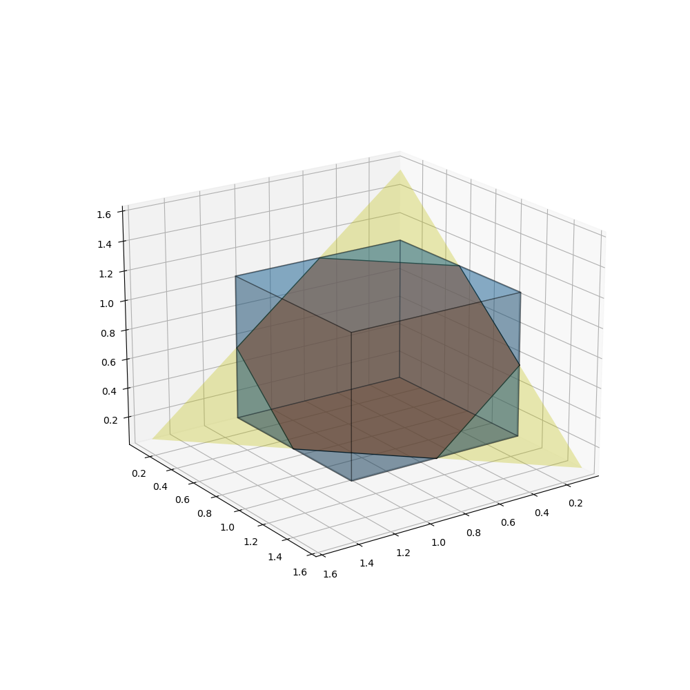

HW1
1. Exercise 2.10 of Convex Optimization
$$ C=\{ x\in R^n | x^T A x + b^T x + c \le 0\} $$ with \( A\in S^n, \quad b\in R^n, \quad c\in R \).
(a) Show that \( C\) is \( A\succeq 0\) (which means \( A\) is positive semidefinite).
It is sufficient to show that \( f(x) = x^T A x + b^T x + c \) is a convex function (for the epi of a convex function is convex.) i.e. $$ \frac{f(x_1) + f(x_2)}{2} \ge f(\frac{x_1+x_2}{2}) $$ that is $$ x_1^TAx_1 + x_2^TAx_2 \ge \frac{1}{2}(x_1^T+x_2^T)A(x_1 + x_2) $$ $$ \Leftrightarrow x_1^TAx_1 + x_2^TAx_2 \ge x_1^TAx_2 + x_2^TAx_1 $$ $$ \Leftrightarrow (x_1-x_2)^TA(x_1 - x_2) \ge 0 $$ it is true since \( A\) is positive semidefinite. \(\blacksquare\)
(b) Show that intersection of \(C\) and the hyperplane defined by \(g^T x + h = 0 \) ( where \(g \ne 0\) ) is convex if \(A + λgg^T \succeq 0 \) for some \(λ ∈ R \). Are the converses of these statements true?
Let $$ H = \{x | g^T x + h = 0\} $$ for \(x\in H\), \(x\in C\) equavalent to $$ x^T (A+ λgg^T) x + b^T x + c + λh^2 \le 0 $$ whose solution set defined \(\tilde{C}\),
if \( A + λgg^T \succeq 0 \) for some \(λ ∈ R \), then \(\tilde{C}\) is convex. $$ x \in H \cap C = H \cap \tilde{C} $$ is intersection of two convex sets, so it is convex. \(\blacksquare\)the converses is false. let's consider the case $$ A = \begin{bmatrix} -1 & 0 \\ 0 & -1 \end{bmatrix}, g = \begin{bmatrix} 0 \\ 1 \end{bmatrix}, b=0, h = 0, c = 0 $$ where \( C=R^2\), \( H = \{ (x_1, x_2) | x_2 = 0\} \), \( C \cap H \) is obvious convex, but \( A + λgg^T = \begin{bmatrix} -1 & 0 \\ 0 & -1 + λ \end{bmatrix}\) can never be positive semidefinite.
2. Exercise 2.18 of Convex Optimization
Invertible linear-fractional functions.
$$ f(x) = \frac{Ax+b}{c^Tx+d}, \qquad dom f = \{x | c^Tx+d > 0\} $$
Suppose the matrix
$$ Q=\begin{bmatrix} A & b \\ c^T & d \end{bmatrix} $$
is nonsingular. Show that \(f\) is an invertible linear fractional function.
let \( y = (Ax+b)/(c^Tx+d) \), then $$ Q\begin{bmatrix} x \\ 1 \end{bmatrix} = (c^Tx+d)\begin{bmatrix} y \\ 1 \end{bmatrix} $$ since \(Q\) is inversible, and \( c^Tx+d > 0 \), we get $$ Q^{-1}\begin{bmatrix} y \\ 1 \end{bmatrix} = \frac{1}{c^Tx+d} \begin{bmatrix} x \\ 1 \end{bmatrix} $$ Then $$ x = P(\begin{bmatrix} x \\ 1 \end{bmatrix}) = P(Q^{-1}\begin{bmatrix} y \\ 1 \end{bmatrix}) $$ so \(f\) is bijective.
Schur complement Matrix Analysis 0.8.5
For \(A\) invertible, $$ Q = \begin{bmatrix} A & b \\ c^T & d \end{bmatrix} = \begin{bmatrix} I & \\ c^TA^{-1} & 1 \end{bmatrix} \begin{bmatrix} A & \\ & d-c^TA^{-1}b \end{bmatrix} \begin{bmatrix} I & A^{-1}b \\ & 1 \end{bmatrix} $$ $$ Q^{-1} = \begin{bmatrix} I & -A^{-1}b \\ & 1 \end{bmatrix} \begin{bmatrix} A^{-1} & \\ & (d-c^TA^{-1}b)^{-1} \end{bmatrix} \begin{bmatrix} I & \\ -c^TA^{-1} & 1 \end{bmatrix} \\ = \begin{bmatrix} A^{-1} + A^{-1}b (d-c^TA^{-1}b)^{-1} c^TA^{-1} & -A^{-1}b (d-c^TA^{-1}b)^{-1} \\ -(d-c^TA^{-1}b)^{-1} c^TA^{-1} & (d-c^TA^{-1}b)^{-1} \end{bmatrix} $$ so, $$ x = \frac{(A^{-1} (d-c^TA^{-1}b) + A^{-1}b c^TA^{-1})y - A^{-1}b }{-c^TA^{-1}y + 1} $$ $$ dom f^{-1} = \{ y | (d-c^TA^{-1}b)(-c^TA^{-1}y + 1) > 0 \} $$
If \(d \ne 0\), similarly, we get $$ Q = \begin{bmatrix} A & b \\ c^T & d \end{bmatrix} = \begin{bmatrix} I & bd^{-1} \\ & 1 \end{bmatrix} \begin{bmatrix} A-bd^{-1}c^T & \\ & d \end{bmatrix} \begin{bmatrix} I & \\ d^{-1}c^T & 1 \end{bmatrix} $$ $$ Q^{-1} = \begin{bmatrix} I & \\ -d^{-1}c^T & 1 \end{bmatrix} \begin{bmatrix} (A-bd^{-1}c^T)^{-1} & \\ & d^{-1} \end{bmatrix} \begin{bmatrix} I & -bd^{-1} \\ & 1 \end{bmatrix} \\ = \begin{bmatrix} (A-bd^{-1}c^T)^{-1} & -(A-bd^{-1}c^T)^{-1}bd^{-1} \\ -d^{-1}c^T(A-bd^{-1}c^T)^{-1} & d^{-1}+d^{-1}c^T(A-bd^{-1}c^T)^{-1}bd^{-1} \end{bmatrix} $$ So, $$ x = \frac{d(dA-bc^T)^{-1}y - (dA-bc^T)^{-1}b}{-c^T(dA-bc^T)^{-1}y + d^{-1}+d^{-1}c^T(dA-bc^T)^{-1}b} $$ $$ dom f^{-1} = \{ y | -c^T(dA-bc^T)^{-1}y + d^{-1}+d^{-1}c^T(dA-bc^T)^{-1}b > 0 \} $$
If \(A\) is not invertable and \(d = 0\), （啊！我要疯了，哪里有这个定理啊，我快算死了！）
Since $$ Q = \begin{bmatrix} A & b \\ c^T & 0 \end{bmatrix} $$ is nonsingular, we have
- \(rank(A) = n-1\), the kernel space denoted \(\lambda v\),
- \(rank([A \quad b] = n) \)
- \( c^Tv\ne 0 \),
- \(b \ne 0\).
Then we conclude \( A + bc^T \) is invertible!
Otherwise, there is some vector \(u\) s.t. \( Au + bc^Tu = 0\), but we have \( rank([A \quad b]) > rank(A) = n-1\), we deduce \( Au = 0 \) and \(bc^Tu = 0\). so we get \( u = \lambda v\), and then \( 0 = \lambda bc^Tv \Rightarrow \lambda = 0\)
Now, we can get $$ Q = \begin{bmatrix} A & b \\ c^T & 0 \end{bmatrix} = \begin{bmatrix} A+bc^T & b \\ c^T & 0 \end{bmatrix} \begin{bmatrix} I & 0 \\ -c^T & 1 \end{bmatrix} $$ denote \( \tilde{A} = A + bc^T \) $$ Q^{-1} = \\ \begin{bmatrix} I & 0 \\ c^T & 1 \end{bmatrix} \begin{bmatrix} \tilde{A}^{-1} - \tilde{A}^{-1}b (c^T\tilde{A}^{-1}b)^{-1} c^T\tilde{A}^{-1} & -\tilde{A}^{-1}b (c^T\tilde{A}^{-1}b)^{-1} \\ (c^T\tilde{A}^{-1}b)^{-1} c^T\tilde{A}^{-1} & -(c^T\tilde{A}^{-1}b)^{-1} \end{bmatrix} $$ （啊，我实在是不想写了，领会意思吧！我都不知道这是在干啥。）
convex hull/Sparse Representation of a Polytope
reference: Sparse representation of a polytope and recovery of sparse signals and low-rank matrices
Please give the Sparse Representation of a Polytope \(A = \{x ∈ R^n : ‖x‖_∞ ≤ θ, ‖x‖_1 ≤ sθ\} \).
For any \(v ∈ R^n\), define the set of sparse vectors \( U (\theta, s, v) ⊂ R^n \) by
$$
U (\theta, s, v) = \{ u \in R^n : supp(u) \subset supp(v) \quad \|u\|_0 = s, \|u\|_1 = \|v\|_1, \|u\|_{\infty} ≤ \theta \}
$$
Any \( v\in A\) can be represented as $$ v = \sum_{i=1}^N \lambda_i u_i, \quad with \quad 0\le\lambda_i\le 1, \quad \sum_{i=1}^N \lambda_i = 1, \quad u_i \in U(\theta, s, v)\ $$
Without loss of generality, we can assume that \(\theta=1\).
Just consider the case \(v \succeq 0\). Without loss of generality, we can assume \(supp(v) = \{1, .. p\} \). Then we can deduce the case to \( n = p\).
So we assume that \(|supp(v)|=n\). The convex hull of \(U(1, s, v)\) is just the part of hyperplane, defined by \( \|u\|_1 = \|v\|_1 \), cutting through the \(n\) dimensional cube \( [0, 1]^n\).
Let $$ v=[a_1, ..., a_n], \quad with \quad \sum_{i=1}^n a_i = \|v\|_1 \in (k, k+1] $$ \( where \quad 0< a_i < 1, k\in Z, k<s \)
Then the extrime points of \(U(1, s, v)\) is the set \{u\in R^n\} \) that elements of \(u\) are permutation of k ones, one \( \|v\|_1-k \) and zeros.
e.g.  for \( U(0.6, 2, [1/2, 1/4, 1/4]) \), its extrime points are \( [1, 1/2, 0], [1, 0, 1/2], [0, 1, 1/2], [1/2, 1, 0], [1/2, 0, 1], [0, 1/2, 1] \), just like the graph in the paper.